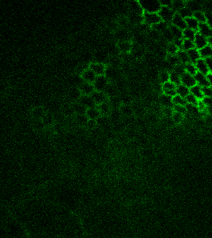
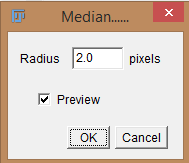
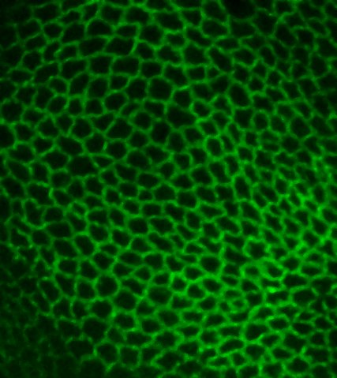
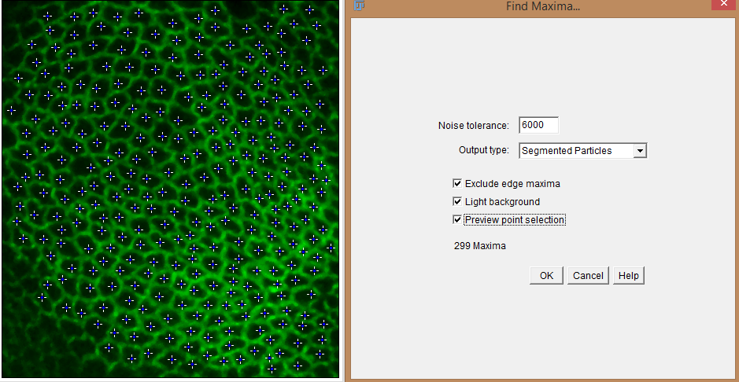
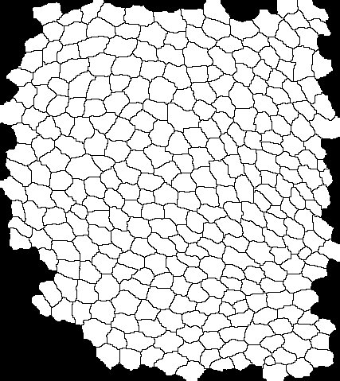
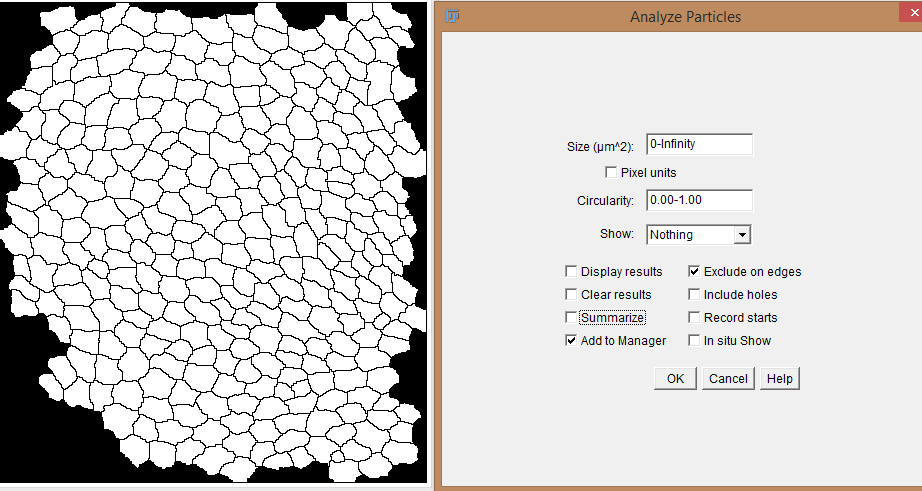
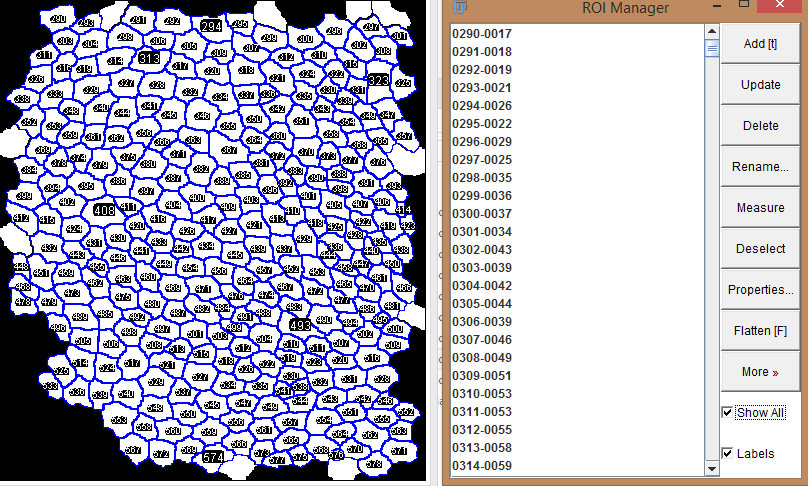
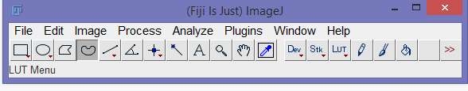
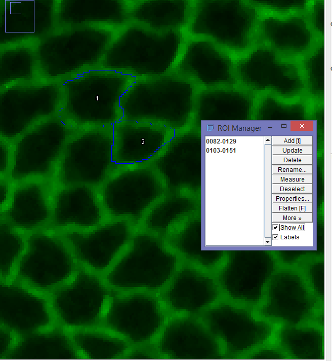
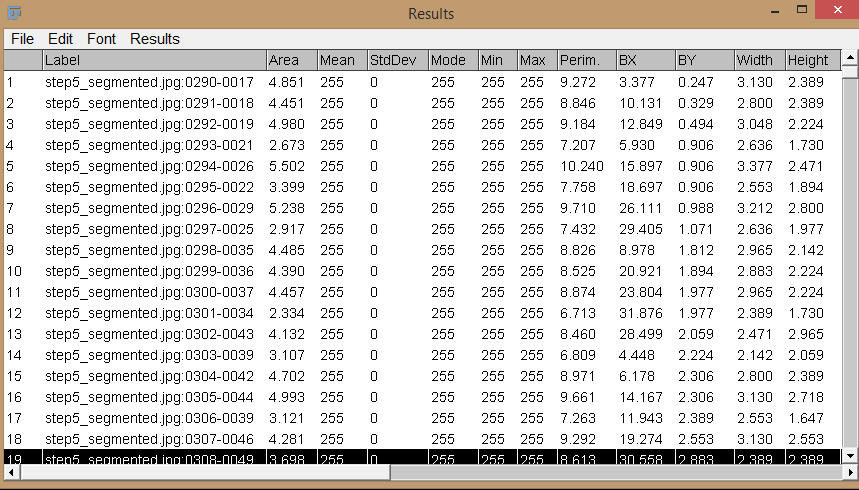

Segmenting outlines of the cells is very easy to do in FIJI without the need for fancy tools. Since everything is scriptable, it is very easy to run batch on hundreds/thousands of images if parameters are figured out in advance. The following is done on a Z stack of ECAD-GFP for a single time point.

Step 1: Open the stack in Fiji
Step 2: Do a maximum intensity projection. Select and run command "Z project..." in command finder.

Step 3.1: Run command "Median..." in command finder to run the median filter. Select a radius for the kernel. Alternative at this step can be using a Gaussian blur ("Gaussian Blur..." in command finder)

Step 3.2: Result of median filter.

Step 4: Find maxima. Select and run command "Find Maxima..." in command finder. Select options, "Segmented Particles", "Exclude edge maxima" to remove edge effects, "Light/Dark background" as needed. Check "Preview Point Selection" to find the points of maxima and adjust "Noise Tolerance" until each one of the cells only contains one point.

Step 5: Select the segmented outlines which is outputted.

Step 6: Select and run command "Analyze Particles..." in command finder. Use size to filter out cells which are too small or too big. You can choose to display results now or later. Select "Add to manager" to add the elements to ROI manager and "exclude on edges" to remove edge effects which might have escaped the previous step.

Step 7.1: The ROI manager would have found the segmented outlines. Select the ROIS and then modify as per your needs. Add or delete ROIS accordingly.

To manually add ROIS, Step 1: select the freehand tool, selected option in the tool bar in the picture above.

To manually add ROIS, Step2: Zoom in to the cell of interest, trace the cell, press t or use button Add on the ROI manager. Use a Wacom pen tablet or a Cintiq or any tablet with active stylus abilities to make life easier.

Step 7.2: Run the "Set Measurements..." options in the command finder. Select your desired parameters.

Step 7.3: Select ROI manager, Press "Deselect" and then "Measure" in ROI manager to get Results window with the parameters of the cell outlines. Warning: If results already exist in the Results window, the new values will be appended. Delete all the values in the Results window before running a new Measure command.